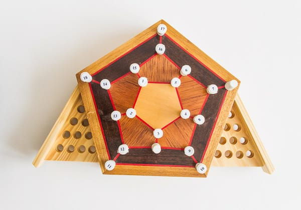
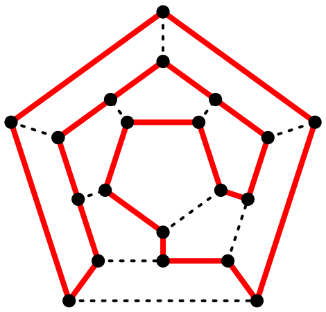

The Icosian game
Hamilton, Ireland’s Royal Astronomer, invented the game in 1856. The board is a flattened dodecahedron: 20 holes for its 20 corners, joined by 30 lines. Travel along the lines, visit every hole once, and end where you started. In the two-player version, one player picks the first five stops and the other must finish the trip.
Jaques & Son of London sold it from 1859, as a flat board and as a hand-held dome. It sold poorly, because a little trial and error solves it. There is only one route to find: without the labels, every solution is the same cycle, turned or mirrored.
Hamilton disagreed and pointed to a colleague who had failed. The writer David Darling suspects Hamilton found it harder than his customers did, because he solved it with algebra instead of trial and error.


Why “Hamiltonian”
A closed route along the edges that passes through every vertex exactly once is now called a Hamiltonian cycle. Leave out the return to the start and it is a Hamiltonian path.
Hamilton was not the first to study them. Knight’s tours, where a chess knight visits every square once, go back to the 9th century in India and in the medieval Islamic world. In England, Thomas Kirkman was studying the same cycles on polyhedra at the same time as Hamilton. Hamilton visited him in 1861 and gave him a copy of the game.
Still, the cycles were named after Hamilton, because of the Icosian game.


Tait’s guess
Peter Guthrie Tait, a physicist in Edinburgh, wanted to prove the four colour theorem. He saw a shortcut. Take a solid where every corner meets exactly three edges. If it has a Hamiltonian cycle, its faces can be coloured with four colours so that no two neighbours match.
So Tait guessed that every such solid has one. The guess stood for 62 years.

Tutte breaks it
W. T. Tutte had spent the war at Bletchley Park, where he worked out how the German Lorenz cipher machine was built. Back at Cambridge, he drew a solid with 46 corners, three edges at each, and no Hamiltonian cycle. Tait was wrong.

Barnette’s question
Tutte’s solid has faces with an odd number of sides. David Barnette, later a professor at UC Davis, asked what happens if every face is even.
Even faces have a catch, which Kirkman found in 1855: a cycle must then alternate between two kinds of corner, so a solid with an odd number of corners has none. But when three edges meet at every corner, the two kinds come in equal numbers, and the catch disappears.
Barnette conjectured that every such solid has a Hamiltonian cycle: every cubic, bipartite, 3-connected planar graph is Hamiltonian. It appeared in 1969 in a book edited by Tutte. Every solid in the game is one of these.

Off the page, it fails
In 1971 Tutte guessed that the word planar could go. Joseph Horton proved him wrong with a graph of 96 vertices, three edges at each, corners split into two equal halves, and no Hamiltonian cycle. It cannot be drawn without crossing edges, so it is not a solid. The smallest such graph, found later, has 50 vertices.
Barnette’s question, about solids, stood untouched.

Closing in
For half a century no one found a counterexample, and no one found a proof. In 1975 Paul Goodey settled the solids whose faces are only squares and hexagons. Computers checked every case up to 64 vertices in 1985, and up to 90 in 2022. In 2025 Tobias Schnieders covered every case with faces of at most eight sides.
Each result shrank the space where a counterexample could hide.

The proof
OpenAI’s paper Paired states and Hamiltonian cycles in cubic bipartite planar graphs, dated 24 September 2026 and released on 6 October, proves Barnette right, and a little more: the cycle can avoid any one edge you choose.
Put a dot in every face and join the dots of neighbouring faces. A Hamiltonian cycle becomes a way to split the dots into two trees. The proof counts certain arrangements on these dots, each with a sign. Those with a loop cancel out, yet the total is not zero. So one without a loop exists. It gives the trees, and the trees give the cycle.
Fifty-seven years after Barnette asked, the answer is yes.
Walk through the proof